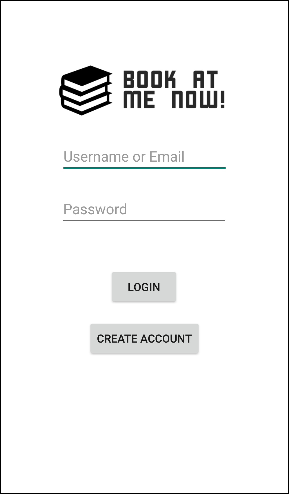
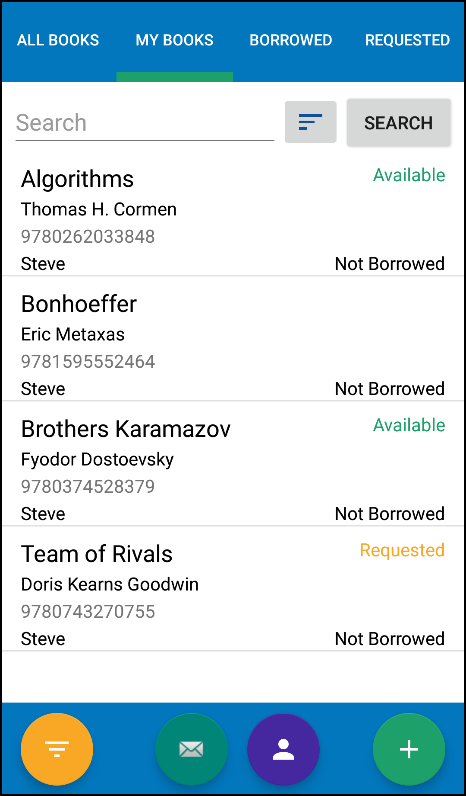
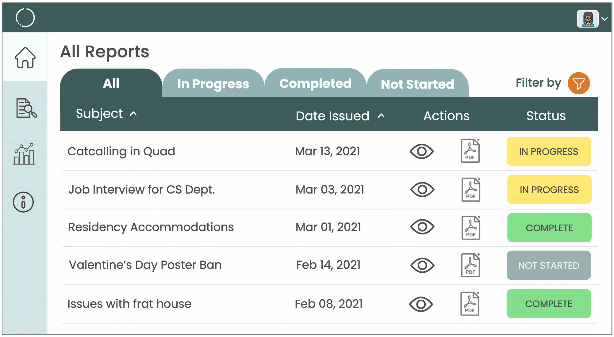
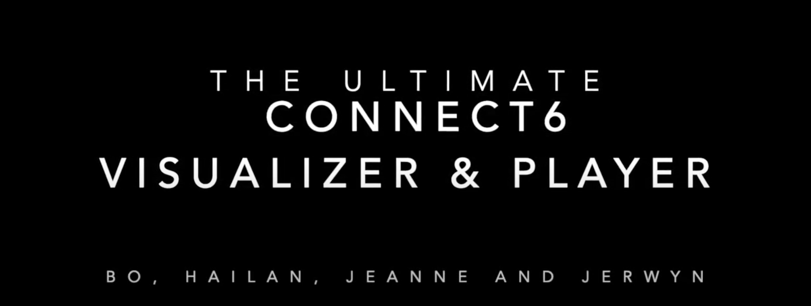

Projects
- Android Developer, Software Engineering
- Designed UX/UI Mockup (Figma)
- Developed/tested community book-sharing application (UML/Java/OOP/Android Studio/Firebase/TravisCI)
- Remote teamwork and collaboration (Scrum/Agile/SDLC/Slack)


Fun fact: Most students take this project course in their third year, but I decided to take it in my second because software engineering is one of my favourite areas of computing science! (Click the images to view the project repository.)
- UX/UI Researcher, Human-Computer Interaction
- Gestalt/heuristic evaluation and user-centered design
- Assessed and/or prototyped a variety of client interfaces (medical school assessments, intelligent Cree dictionary, bias reporting in a university setting)
- Remote teamwork and collaboration (Discord/Google Suite)

Fun fact: Another course students often wait until their third year to take. After taking this course in my second year, I was offered a research position in my professor's group based on my performance in this course. (Click the image to view one of our project files.)
- Games Developer, Games, Puzzles, Algorithms
- Designed/developed/tested/evaluated game interface, player algorithm, and visualizer
- Remote teamwork and collaboration (Discord/Github)

Fun fact: Yet another course students often wait until their third or fourth year to take. After taking this course in my second year, I also really like Go now. (Click the image to view the project repository and demo video.)